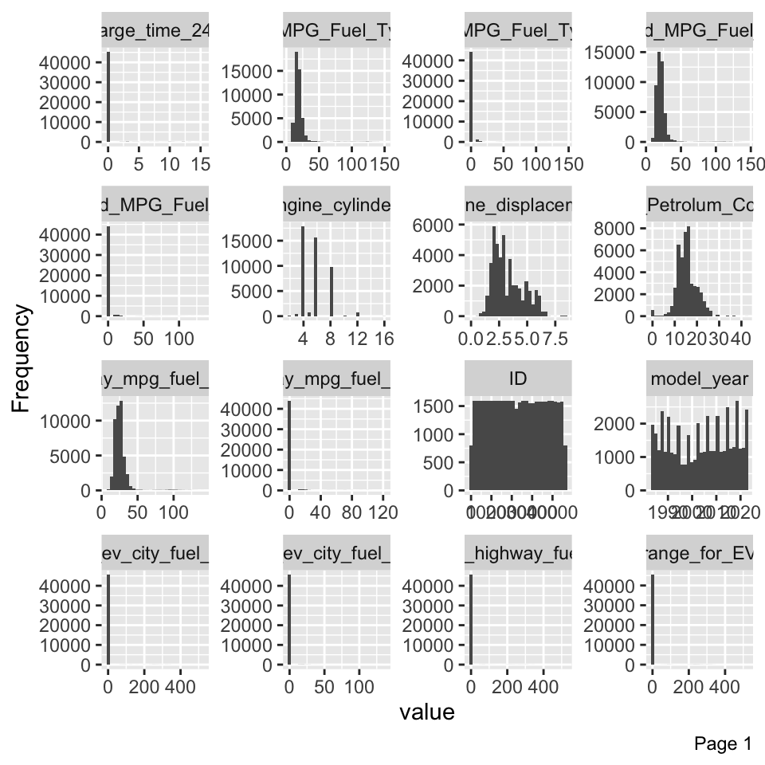
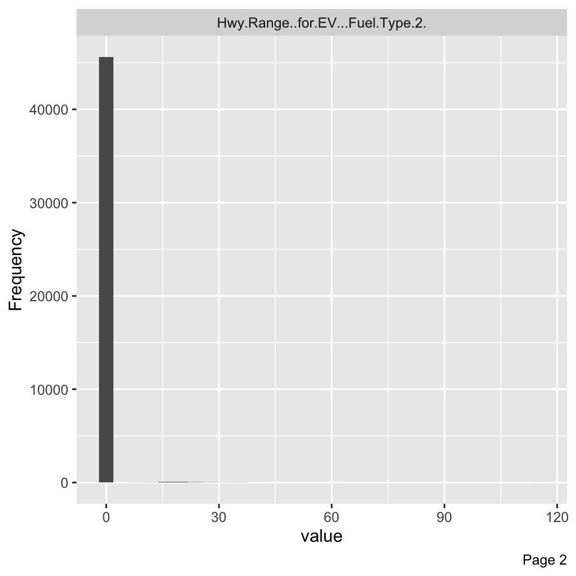
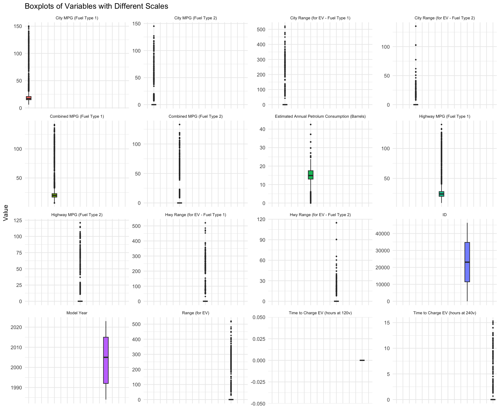
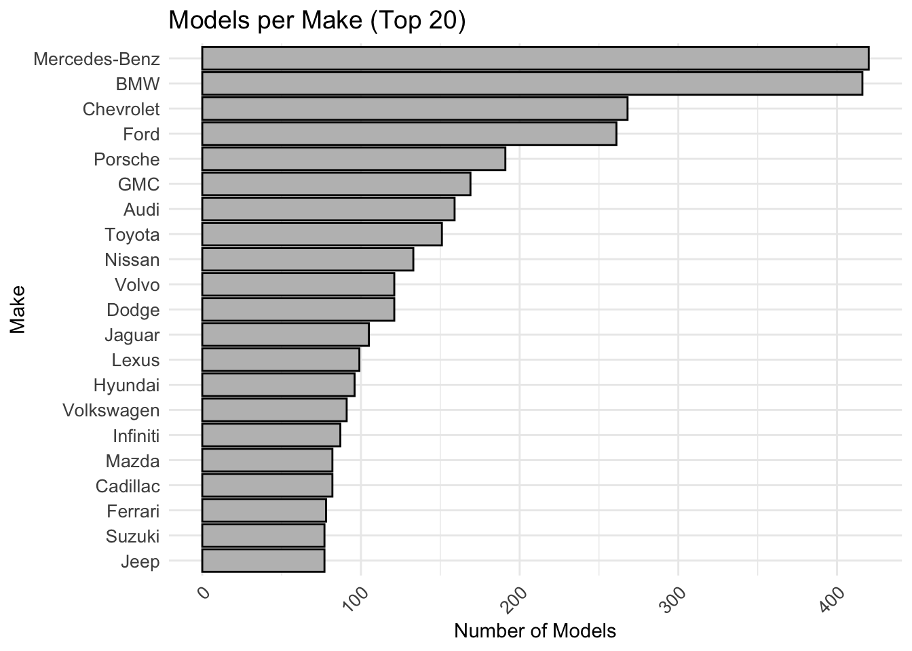

To begin with our EDA, let’s have a look at our dataset and in particular the characteristics of the columns.
Code
#to get a detailed summaryskim(data)
Data summary
Name
data
Number of rows
45896
Number of columns
26
_______________________
Column type frequency:
character
8
numeric
18
________________________
Group variables
None
Variable type: character
skim_variable
n_missing
complete_rate
min
max
empty
n_unique
whitespace
Make
0
1.00
3
34
0
141
0
Model
0
1.00
1
47
0
4762
0
Fuel Type 1
0
1.00
6
17
0
6
0
Fuel Type 2
44059
0.04
3
11
0
4
0
Drive
1186
0.97
13
26
0
7
0
Engine Description
17031
0.63
1
46
0
589
0
Transmission
11
1.00
12
32
0
40
0
Vehicle Class
0
1.00
4
34
0
34
0
Variable type: numeric
skim_variable
n_missing
complete_rate
mean
sd
p0
p25
p50
p75
p100
hist
ID
0
1.00
23102.11
13403.10
1.00
11474.75
23090.50
34751.25
46332.00
▇▇▇▇▇
Model Year
0
1.00
2003.61
12.19
1984.00
1992.00
2005.00
2015.00
2023.00
▇▆▆▇▇
Estimated Annual Petrolum Consumption (Barrels)
0
1.00
15.33
4.34
0.05
12.94
14.88
17.50
42.50
▁▇▃▁▁
City MPG (Fuel Type 1)
0
1.00
19.11
10.31
6.00
15.00
17.00
21.00
150.00
▇▁▁▁▁
Highway MPG (Fuel Type 1)
0
1.00
25.16
9.40
9.00
20.00
24.00
28.00
140.00
▇▁▁▁▁
Combined MPG (Fuel Type 1)
0
1.00
21.33
9.78
7.00
17.00
20.00
23.00
142.00
▇▁▁▁▁
City MPG (Fuel Type 2)
0
1.00
0.85
6.47
0.00
0.00
0.00
0.00
145.00
▇▁▁▁▁
Highway MPG (Fuel Type 2)
0
1.00
1.00
6.55
0.00
0.00
0.00
0.00
121.00
▇▁▁▁▁
Combined MPG (Fuel Type 2)
0
1.00
0.90
6.43
0.00
0.00
0.00
0.00
133.00
▇▁▁▁▁
Engine Cylinders
487
0.99
5.71
1.77
2.00
4.00
6.00
6.00
16.00
▇▇▅▁▁
Engine Displacement
485
0.99
3.28
1.36
0.00
2.20
3.00
4.20
8.40
▁▇▅▂▁
Time to Charge EV (hours at 120v)
0
1.00
0.00
0.00
0.00
0.00
0.00
0.00
0.00
▁▁▇▁▁
Time to Charge EV (hours at 240v)
0
1.00
0.11
1.01
0.00
0.00
0.00
0.00
15.30
▇▁▁▁▁
Range (for EV)
0
1.00
2.36
24.97
0.00
0.00
0.00
0.00
520.00
▇▁▁▁▁
City Range (for EV - Fuel Type 1)
0
1.00
1.62
20.89
0.00
0.00
0.00
0.00
520.80
▇▁▁▁▁
City Range (for EV - Fuel Type 2)
0
1.00
0.17
2.73
0.00
0.00
0.00
0.00
135.28
▇▁▁▁▁
Hwy Range (for EV - Fuel Type 1)
0
1.00
1.51
19.70
0.00
0.00
0.00
0.00
520.50
▇▁▁▁▁
Hwy Range (for EV - Fuel Type 2)
0
1.00
0.16
2.46
0.00
0.00
0.00
0.00
114.76
▇▁▁▁▁
The dataset that we are working with contains approx. 46’000 rows and 26 columns. We can see that most of our features are concerning the consumption of the cars. In addition, we notice that some variables contain a lot of missing and that the variable “Time.to.Charge.EV..hours.at.120v.” is only containing 0s. We will be handle these in the section “data cleaning”.
Exploration of the distribution
Here are more details about the distribution of the numerical features.
Code
# melt.data <- melt(data)# # ggplot(data = melt.data, aes(x = value)) + # stat_density() + # facet_wrap(~variable, scales = "free")plot_histogram(data)# Time.to.Charge.EV..hours.at.120v. not appearing because all observations = 0


We notice that most of our observations of our features are 0s because of the nature of the features. For instance, as most of our cars are not hybrids, they have a unique type of fuel and don’t have any type 2, which results in a 0 in the concerned features. Also, some features are numerical discrete, as we can see on the plot of the column “Engine Cylinders”.
Outliers Detection
For each one of our numerical column, let’s check thank to the boxplot the outliers per feature
Code
#tentative boxplotsdata_long <- data %>%select_if(is.numeric) %>%pivot_longer(cols =c("ID", "Model Year", "Estimated Annual Petrolum Consumption (Barrels)", "City MPG (Fuel Type 1)", "Highway MPG (Fuel Type 1)", "Combined MPG (Fuel Type 1)", "City MPG (Fuel Type 2)", "Highway MPG (Fuel Type 2)", "Combined MPG (Fuel Type 2)", "Time to Charge EV (hours at 120v)", "Time to Charge EV (hours at 240v)", "Range (for EV)", "City Range (for EV - Fuel Type 1)", "City Range (for EV - Fuel Type 2)", "Hwy Range (for EV - Fuel Type 1)", "Hwy Range (for EV - Fuel Type 2)"), names_to ="variable", values_to ="value")ggplot(data_long, aes(x = variable, y = value, fill = variable)) +geom_boxplot(outlier.size =0.5) +# Make outlier points smallerfacet_wrap(~ variable, scales ="free_y") +# Each variable gets its own y-axistheme_minimal() +theme(legend.position ="none", # Hide the legendaxis.text.x =element_text(angle =90, vjust =0.5, hjust =1, size =0),strip.text =element_text(size =7)) +# Rotate x-axis labelslabs(title ="Boxplots of Variables with Different Scales", x ="", y ="Value")

Code
#Now # plot_correlation(data) #drop time charge EV 120V# create_report(data)#nb cars per brand
number of models per make
Now let’s check how many models per make we have in our dataset. In order to have a clear plot, we have decided to keep the top 20 brands among all the make on the graph. All the remaining makes are accessible on the table just below.
Code
#Number of occurences/model per make nb_model_per_make <- data %>%group_by(Make, Model) %>%summarise(Number =n(), .groups ='drop') %>%group_by(Make) %>%summarise(Models_Per_Make =n(), .groups ='drop') %>%arrange(desc(Models_Per_Make))#tabledatatable(nb_model_per_make,rownames =FALSE,options =list(pageLength =10,class ="hover",searchHighlight =TRUE))
Code
# Option to limit to top 20 makes for better readabilitytop_n_makes <- nb_model_per_make %>%top_n(20, Models_Per_Make)# Reordering the Make variable within the plotting code to make it ordered by Models_Per_Make descending# nb_model_per_make$Make <- factor(nb_model_per_make$Make, levels = nb_model_per_make$Make[order(-nb_model_per_make$Models_Per_Make)])
Code
ggplot(top_n_makes, aes(x =reorder(Make, Models_Per_Make), y = Models_Per_Make)) +geom_bar(stat ="identity", color ="black", fill ="grey", show.legend =FALSE) +labs(title ="Models per Make (Top 20)",x ="Make",y ="Number of Models") +theme_minimal() +theme(axis.text.x =element_text(angle =45, hjust =1, size =10),axis.text.y =element_text(hjust =1, size =10),plot.title =element_text(size =14)) +coord_flip() # Flip coordinates for better readability

Therefore, we can see that Mercendes-Benz and BMW have significantly more models in our dataset, which means that we are dealing with some imbalances in categories. Therefore, we need to be careful when doing predictions, as will may encounter bias toward these two majority classes. Therefore, there are few technics that can be used to deal with this problem, such as resampling technics, Ensemble Methods (RF, Boosting), tuning probability threshold
#Here I encounter some problems with some of the variables. #check NAs# colSums(is.na(data))data_corrplot <- data %>%select_if(is.numeric)# Identify constant columns (columns with zero standard deviation)constant_columns <-sapply(data_corrplot, function(x) sd(x, na.rm =TRUE) ==0)# Print constant columns for inspectionprint("Constant columns (standard deviation is zero):")
[1] "Constant columns (standard deviation is zero):"
Code
print(names(data_corrplot)[constant_columns])
[1] "Time to Charge EV (hours at 120v)"
Code
# Remove constant columnsdata_corrplot <- data_corrplot[, !constant_columns]# Correlation transformation for plot using complete observationscor_matrix <-cor(data_corrplot, use ="complete.obs")
Warning in cor(data_corrplot, use = "complete.obs"): the standard deviation is
zero
Code
# Melt correlation matrix for plottingcor_melted <-melt(cor_matrix)# Plot correlation matrix heatmap using ggplot2ggplot(data = cor_melted, aes(Var1, Var2, fill = value)) +geom_tile(color ="white") +scale_fill_gradient2(low ="blue", high ="red", mid ="white",midpoint =0, limit =c(-1, 1), space ="Lab",name ="Pearson\nCorrelation") +theme_minimal() +theme(axis.text.x =element_text(angle =45, vjust =1, size =8, hjust =1),axis.text.y =element_text(size =8)) +coord_fixed() +labs(x ='', y ='', title ='Correlation Matrix Heatmap')
;%20dev.off()-1.png)